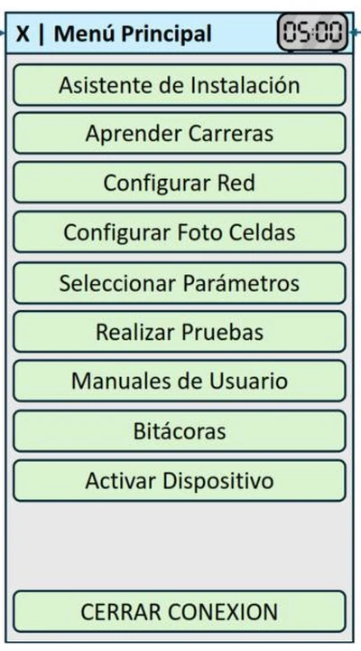
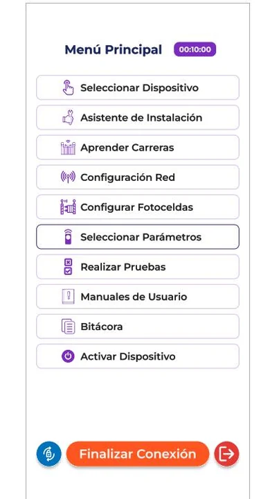

Portafolio · Rumbo a 2027
Anyel Ariana Mena Gómez
Diseñadora potenciada con IA para transformar empresas.
Pongo el criterio, la mano y la escucha. La IA multiplica lo que puedo explorar, probar y entregar.
Tu recorrido: Laboratorio · Método · Contacto
Quién soy
Yo dirijo. La IA ejecuta. Cada decisión la firma una persona.
El origen
Aprendí diseño en el mostrador de una boutique, viendo qué mensaje mueve a una persona a decidir.
Qué hago hoy
Trabajo por proyecto. Lo digital y lo manual, con la misma seriedad.
Hacia 2027
Ayudo a empresas a adoptar la IA en su diseño sin perder criterio humano.
Cómo trabajo con IA
Ciclos cortos. En cada uno sé qué hago yo y qué hace la IA.
-
Contexto
- Yo
- Escucho, defino el problema y escribo el brief.
- IA
- Ordena la información y me devuelve preguntas.
-
Prototipo
- Yo
- Decido estructura, jerarquía y tono.
- IA
- Figma con MCP y VS Code aceleran pantallas y código.
-
Lanzamiento
- Yo
- Valido con el cliente, etapa por etapa.
- IA
- Genera variantes, imágenes y textos de prueba.
-
Mejora
- Yo
- Reviso qué funcionó y qué no.
- IA
- Itera rápido sobre lo aprendido.
Ver mis herramientas
- Figma + MCPConecto Figma con agentes de IA para pasar del diseño al prototipo.
- VS Code + agentes de IADirijo la construcción de sitios como este a partir de mis propios briefs.
- MurekaProducción musical con IA, con una metodología propia de diez reglas.
- Generación y edición de imagenTexturas, fondos y retoque fotográfico.
Laboratorio
Una canción: de una escena escrita a un prompt preciso.
Al despertar
Leer la letra
Antes que los ojos se abran…
hay un instante, breve,
donde algo ya despierta…
y el mundo, todavía no.
La luz entra, descalza,
como quien no quiere molestar…
Aquí estoy…
vacío, sin nada más,
solo un querer, recién nacido,
que dejo aquí, en tus manos.
Hoy me decido.
Antes que mis pies toquen el suelo.
No mañana… no después…
ahora, en este primer surgir.
Mis manos se abren… antes de tocar.
Mis ojos se callan… antes de mirar.
Mis palabras esperan…
algo más verdadero, que mi voz.
El sol entra…
y algo en mí, se enciende con su luz.
Como la llama, que enciende otra llama,
sin perder nada de sí…
Este amanecer, no es solo mío.
Algo lo sostiene…
algo lo respira…
algo me levanta…
me levanta…
me levanta…
Anatomía del prompt
Elige una regla de mi método para verla dentro del prompt.
Sacred dawn song, solo classical nylon string guitar, key of D major, 4/4 time signature, 46 BPM, pianissimo to piano dynamics. Intimate and warm like the first light entering a quiet room. Opening with single delicate plucked notes, sparse and slow, like drops of light appearing one by one. Then gentle fingerpicking arpeggios join gradually as the song breathes deeper. Mid-section allows silence between phrases, spacious pauses for the voice to rest. Simple diatonic melody in mid register. Soft warm nylon tone creating close intimate atmosphere, clear and near sound. Rubato phrasing, no percussion, no drums. Inspired by Francisco Tárrega Lágrima and Erik Satie Gymnopédie No.1. Tender, serene, grateful, contemplative. The feeling of opening your eyes and finding peace before the world wakes up. Each verse grows softer. Final section dissolves into whispered pianissimo arpeggios fading to nothing. Idioma: Español
Ver el flujo en seis pasos
- Recibir la escena o el texto base.
- Analizar atmósferas, imágenes, narrador y emoción.
- Crear la estructura musical: tonalidad, compás, tempo, instrumento y arco.
- Escribir un poema en prosa que capture la escena.
- Condensarlo en una letra cantable de frases cortas.
- Generar el prompt (máximo 1000 caracteres) y verificar que escena, letra y prompt estén alineados.
Esta página también es laboratorio
La dirigí desde VS Code con un agente de IA, a partir de un brief que escribí yo:
«Que en menos de un minuto alguien entienda quién soy, qué resuelvo y vea un caso real con resultados medibles.»
Prueba en empresa · Bgnius
Desbloqueé un proyecto que llevaba dos años detenido.


Del wireframe del cliente a una interfaz que se entiende de un vistazo.
Desliza sobre la imagen o usa las flechas del teclado.
Ver el proceso
- Entender el bloqueo. Levanté qué esperaba cada parte y dónde chocaban las expectativas.
- Validar en Figma por etapas. El prototipo les permitió sentir el recorrido antes de programarlo.
- Probar y ajustar. Con cada etapa aprobada pasaba a la siguiente.
La mano
Lo que dibujo a mano es lo que le enseño a mirar a la IA.
Transparencia
Dónde participó la IA en esta página.
- Fondo de papelGenerado con IA
- Fotografía de perfilTrabajada con IA
- Código de la páginaAgente de IA en VS Code, dirigido por mí
- Canción «Al despertar»Mureka, con mi letra y mi prompt
- Pinturas e ilustraciones100 % a mano
Contacto
¿Tu empresa quiere diseñar con IA en 2027?
menagomezanyel@gmail.com